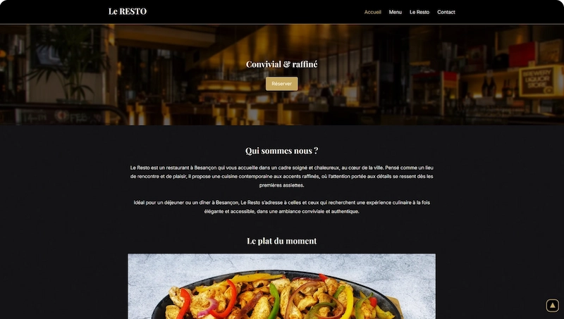
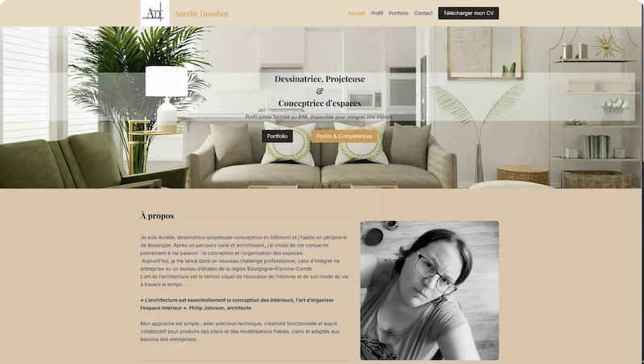
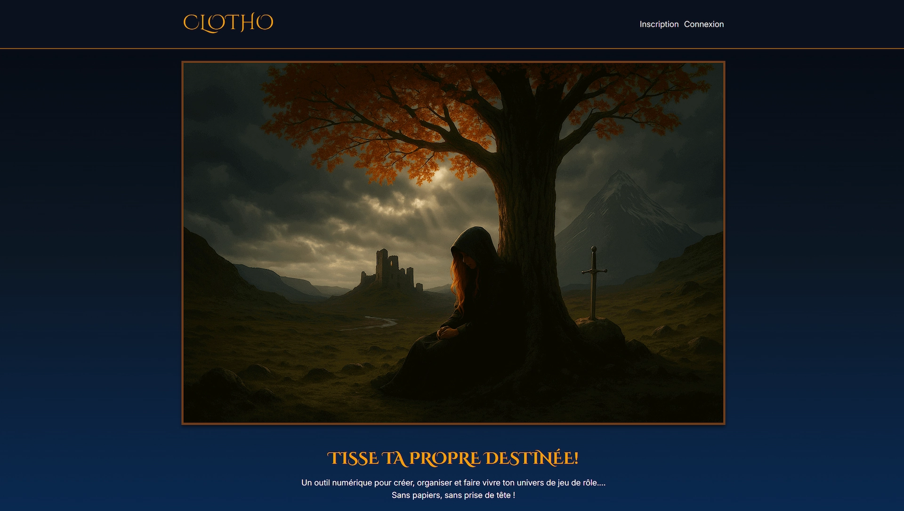

Développeur web freelance à Besançon
Je suis Christopher, développeur web freelance basé à Besançon. Après plus de dix ans dans la grande distribution, un environnement aussi exigeant que formateur, j'ai choisi de me consacrer à ce qui me passionne vraiment : concevoir des outils digitaux utiles et bien construits.
Je crée des sites web sur mesure pour des entrepreneurs qui lancent leur activité et des structures qui veulent moderniser leur présence en ligne. Chaque projet est pensé pour être rapide, accessible et durable.
Mon approche : comprendre vos objectifs, vous conseiller avec clarté, et créer un site qui vous ressemble vraiment.
Construisons ensemble

Votre vitrine sur le web
Vous n'avez pas de site ou votre présence en ligne ne vous ressemble plus ?
Je conçois
des
sites
vitrines sur mesure en HTML/CSS ou WordPress,
adaptés à tous les écrans et pensés pour que vos visiteurs comprennent en quelques secondes
ce
que vous faites et aient envie de vous contacter.

Refonte & Maintenance
Votre site WordPress a besoin d'un coup de neuf ou simplement d'un suivi régulier?
Je m'occupe de la refonte visuelle, des mises à jour et de la maintenance pour que votre
site
reste moderne, performant et sécurisé.
Création de site vitrine, refonte WordPress, maintenance… découvrez le détail de mes prestations.
En savoir plusMes compétences
FRONT
- HTML
- CSS
- SASS
- JavaScript
- GSAP
- Twig
- Responsive Design
- Bootstrap
- Tailwind
BACK
- PHP
- Base de données
- Symfony
- Twig
OUTILS
- WordPress
- SEO
- IA
- Figma
- Git
- Docker
- Trello
- DaVinci Resolve
- Affinity (notions)
Clotho, c'est mon projet perso : une application de gestion de campagnes de jeu de rôle, déployée en production sur clotho.fr. Je la développe dans mon coin, fonctionnalité par fonctionnalité, parce que j'en avais envie et parce que c'est comme ça que j'apprends le mieux.
Symfony, Docker, CI/CD… c'est à travers Clotho que j'ai mis en pratique la plupart de ces technos. Il reste encore beaucoup à faire, mais c'est justement ce qui me plaît.
À terme, j'aimerais la commercialiser en SaaS. Un objectif ambitieux pour moi, qui me pousse à faire attention autant à la qualité du code qu'à l'expérience utilisateur.

En savoir plus